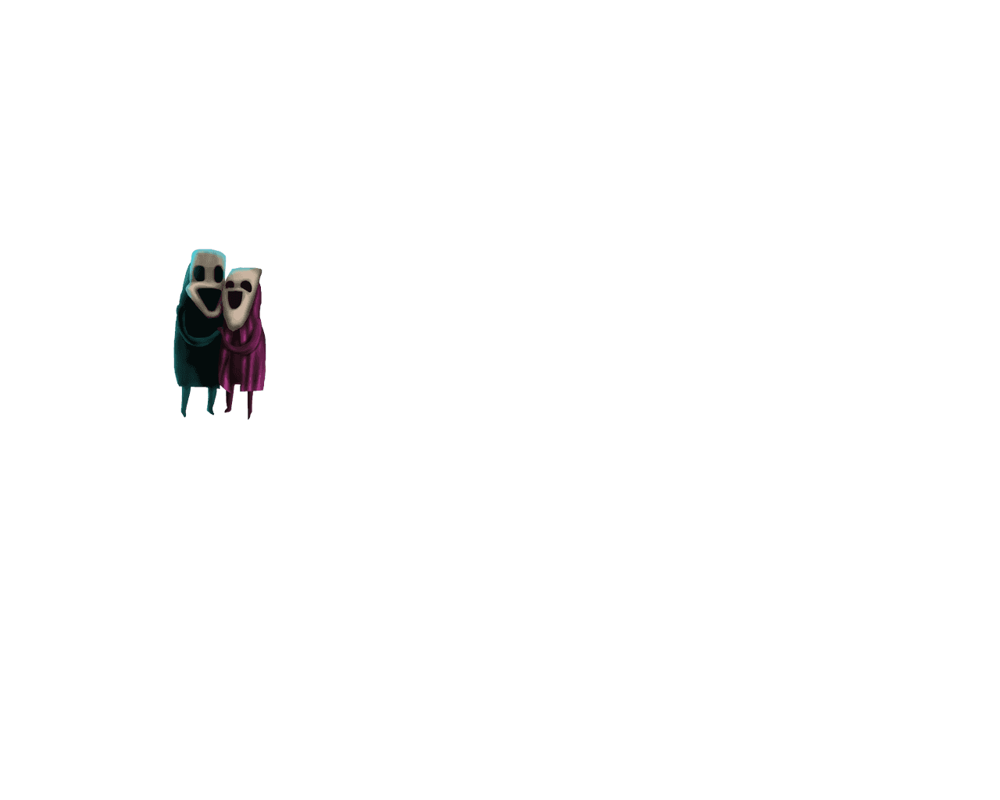

	    <div class="view-wrapper">
		    <div class="view">
			    
			    
			    
			    
			    
			    
			    
			    
                
                
                
                
                
                


			    <div style="width: 150px; height: 150px; margin-left: 310px; margin-top: 510px"
				    class="action sound" data-file="./Sounds/Figurensound/O.wav.MP3" data-tooltip-header="MOE" data-tooltip-style="width: 450px; height: 150px; margin-left: 50px; margin-top: 80px"
					data-tooltip-text="Ich bin „Detekt-MOE“, <br/\>die starke Flosse des Gesetzes!"></div>
			    
                <div style="width: 150px; height: 150px; margin-left: 190px; margin-top: 630px"
				    class="action sound" data-file="./Sounds/Figurensound/Pipp.wav.MP3" data-tooltip-header="PIPP" data-tooltip-style="width: 450px; height: 150px; margin-left: 520px; margin-top: 590px"
					data-tooltip-text="Aus dem Weg! Ich bin Junior-Schatten „PIPP, der Lausbub“."></div>
			    
                <div style="width: 170px; height: 180px; margin-left: 360px; margin-top: 690px"
				    class="action sound" data-file="./Sounds/Figurensound/Toddy.wav.MP3" data-tooltip-header="TODDY" data-tooltip-style="width: 450px; height: 180px; margin-left: 520px; bottom: 80px;"
					data-tooltip-text="Wir spielen Schatten und Detektors. Detekt-MOE wird mich niemals in seine Flosse bekommen! Muahaha..."></div>
			    
                <div style="width: 170px; height: 180px; margin-left: 70px; margin-top: 770px"
				    class="action sound" data-file="./Sounds/Figurensound/Grunz.wav.MP3" data-tooltip-header="GRUNZ" data-tooltip-style="width: 450px; height: 250px; margin-left: 50px; margin-top: 250px"
					data-tooltip-text="Du suchst LOW? <br/\>Ich bin „GRUNZ, der Profi-Schnüffler“ und kann LOW sogar von hier aus erschnüffeln. Folge einfach dieser Straße und du gelangst zu seiner Werkstatt. "></div>
			    
                <div style="width: 200px; height: 220px; margin-left: 950px; margin-top: 700px"
				    class="action optional sound" data-file="./Sounds/Figurensound/Trunkenbold.wav.MP3"></div>
			    
                <div style="width: 250px; height: 250px; margin-left: 500px; margin-top: 350px"
				    class="action sound" data-file="./Sounds/Figurensound/WIDOW.wav.MP3" data-tooltip-header="WIDOW" data-tooltip-style="width: 450px; height: 250px; right: 50px; margin-top: 80px"
					data-tooltip-text="Hallo Jüngchen `keuch`... <br/\>Der Arzt meinte, ich hätte nur eine leichte Erkältung `hust`... <br/\>Lass uns nach Hause gehen, RUFUS! `röchel`..."></div>
		    </div>
	    </div>
	    <div class="view-wrapper">
		    <div class="view">
			    
			    
			    
			    
			    
			    
			    
			    

			    <div style="width: 450px; height: 450px; margin-left: 330px; margin-top: 360px"
				    class="action sound" data-file="./Sounds/Figurensound/Low.MP3" data-tooltip-header="LOW" data-tooltip-style="width: 450px; height: 280px; margin-left: 50px; margin-top: 80px"
					data-tooltip-text="Hey Kleiner!<br/\> Ich habe keine Ahnung von einem Einbruch oder den Schatten, außerdem siehst du nicht so aus, als hättest du ein Motorengefährt, das ich reparieren müsste, also verzieh dich! "></div>
            </div>
        </div>
	    <div class="view-wrapper">
		    <div class="view text" data-text="Kein besonders freundlicher Zeitgenosse, dieser LOW, aber was ist das für ein eigenartiger Nebel, der aus der Werkstatt kommt?">
			    
			    
			    
			    
			    
			    
		        

			    <div style="width: 600px; height: 350px; margin-left: 600px; margin-top: 200px"
				    class="action sound" data-file="./Sounds/Figurensound/Low.MP3" data-tooltip-header="LOW" data-tooltip-style="width: 450px; height: 150px; margin-left: 280px; margin-top: 290px"
                    data-tooltip-text="Ich habe gesagt, du sollst verschwinden! Also hau endlich ab, du halbe Portion!"></div>
            </div>
        </div>
	    <div class="view-wrapper">
		    <div class="view">
			    
			    
			    
			    
			    
			    
			    
			    
			    

			    <div style="width: 300px; height: 300px; margin-left: 160px; margin-top: 230px"
				    class="action sound" data-file="./Sounds/Figurensound/Liebespaar.wav.MP3"  data-tooltip-header="LIEBESPAAR" data-tooltip-style="width: 450px; height: 240px; margin-left: 50px; margin-top: 80px"
					data-tooltip-text="Wir haben uns auf der Feier gefunden und werden nächste Woche heiraten! Das liegt aber nicht an der Sparaktion des Standesamtes: „Vermählung: Zwei Personen zum Preis von einer!“, sondern ausschließlich an unserer endlosen Liebe zueinander."></div>
			    <div style="width: 330px; height: 330px; margin-left: 450px; margin-top: 560px"
				    class="action sound" data-file="./Sounds/Figurensound/Olga.wav.MP3" data-tooltip-header="OLGA" data-tooltip-style="width: 450px; height: 240px; margin-left: 650px; margin-top: 300px"
					data-tooltip-text="Du bist immer noch auf Spurensuche? Nur Mal so unter uns... Wenn du einen Blick in die Werkstatt erhaschen willst, solltest du heute Nacht nochmal dein Glück versuchen. LOW ist nachts immer bei seinen „geheimen Treffen“ im „geheimen Hauptquartier“ der „geheimen Organisation“. "></div>
            </div>
        </div>
	    <div class="view-wrapper">
		    <div class="view actionless video audio" data-pause-audio="testmusik">
			    <video width="1280" height="760" src="./Videos/Szene24_Nachtszene.mp4">
			    </video> 
		    </div>
	    </div>
	    <div class="view-wrapper">
		    <div class="view text actionless audio" data-text="LOW ist anscheinend schon bei seinem „geheimen Treffen“. Na dann mal rein in die gute Stube!" data-play-audio="guadnachtmusi">
			    
			    
			    
			    
			    
			    
			    
				
            </div>
        </div>
	    <div class="view-wrapper">
		    <div class="view text actionless" data-text="Das Auto der Detektoren? Da geht etwas nicht mit rechten Dingen zu... <br/\><br/\>
Und ist das nicht dasselbe Gelee wie in meiner Wohnung? ...Aber warum wird es in Fässern gelagert?">
			    
			    
			    
			    
			    
			    
			    
			    
            </div>
        </div>
	    <div class="view-wrapper">
		    <div class="view text actionless" data-text="EISEN und die Schatten scheinen tatsächlich zusammenzuarbeiten... Äußerst korrupt! <br/\>Bei EXPEDIOS brennt noch Licht. Vielleicht ist er in der Lage, mir Antworten auf meine schleimigen Fragen zu liefern. ">
			    
			    
			    
			    
			    
			    
			    
			    
            </div>
        </div>
	    <div class="view-wrapper">
		    <div class="view actionless text" data-text="EXPEDIOS, der Abenteurer, hat schon eine komische Hütte!">
			    
			    
			    
			    
			    
			    
			    

			    <div style="width: 300px; height: 340px; right: 0px; bottom: 240px"
				    class="action sound" data-file="./Sounds/Figurensound/Fleischpflanzerl.wav.MP3"></div>
            </div>
        </div>

